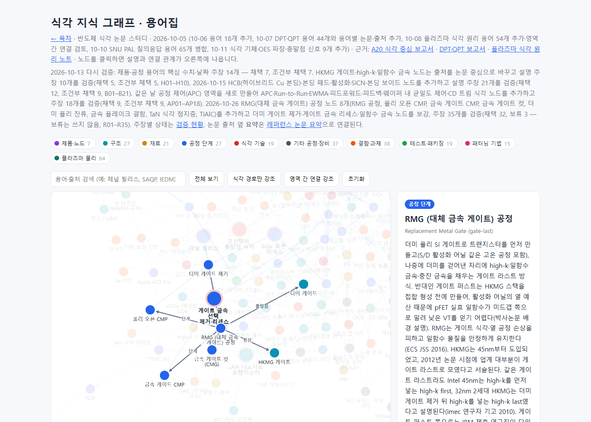
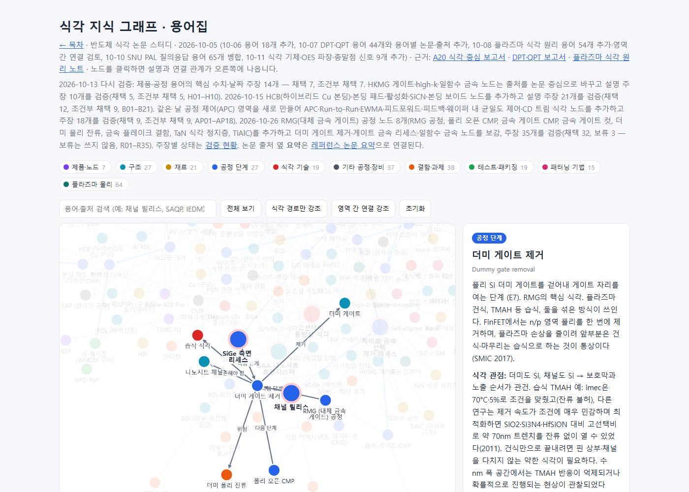
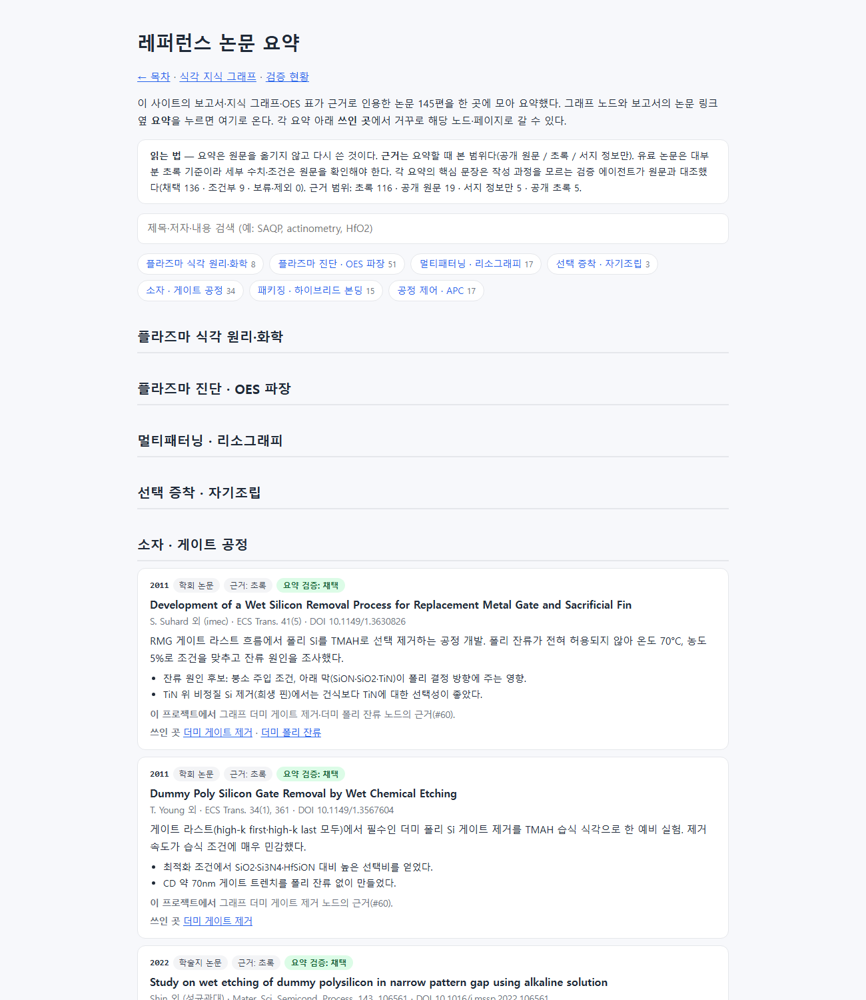

#60
RMG(대체 금속 게이트) 공정 조사·지식 그래프 추가
지시 (원문)
RMG 공정 관련 내용 조사 및 추가.
(작업 중 추가 지시 "완료되면, 식각 공정에 대한 기초 내용 보충할 거 있으면 해줘. 그리고 web에서 전체 구성 개선할 것 있는지도 검토해줘."는 다음 항목에 기록한다.)
분석 (Claude의 정리)
- RMG는 Replacement Metal Gate, 즉 더미 폴리 게이트로 트랜지스터를 만든 뒤 더미를 걷어내고 금속 게이트로 바꾸는 게이트 라스트 HKMG 공정이다.
- 그래프에는 이미 HKMG 게이트·high-k·일함수 금속·더미 게이트·더미 게이트 제거·게이트 금속 리세스 노드와 주장 10개(H01–H10, 주로 GAA 관점)가 있었다. 빠진 것은 게이트 퍼스트/라스트·high-k first/last 비교, 폴리 오픈 CMP, 더미 폴리 제거 화학과 과제, 금속 게이트 CMP, 일함수 금속 패터닝의 식각 정지층, 게이트 금속 리세스 화학, 게이트 컷이다.
- 새 사실이므로 검증 절차(장부 → 독립 검증 → gate)를 거치고, 새로 인용하는 논문은 요약을 만든다.
과정
- 자문.
- astra(high, 백그라운드): 게이트 퍼스트/라스트, RMG 흐름, 더미 폴리 제거, 일함수 금속 패터닝, 금속 CMP·리세스, 게이트 컷, GAA 차이를 물었다. 약 1시간 뒤 결과를 받았다.
- jev
- 형태: "기존 그래프 GAA 영역에 노드 6~9개 추가, 별도 페이지 없음"(0.50, 신뢰도 0.33 — 낮음).
- 기록 단계: "새 16단계"(0.95).
- 가장 깊게 다룰 부분: "더미 폴리 제거 식각"(0.51, 신뢰도 0.35).
- 셋 다 따랐다.
-
lit_search.py8개 질의와 OpenAlex 검색 7개로 후보를 찾고, 핵심 논문의 초록을 읽었다. 출판사(ECS) PDF는 봇 차단으로 받지 못해 근거는 대부분 초록 수준이다. - 장부
ledger/rmg.json(비공개)에 1차 주장 17개(R01–R17)를 적었다. lint 오류 0, DOI 13개 실재. 작성 과정을 모르는claim-verifier4개에 blind 입력만 넘겼다. 결과는 채택 16, 조건부 1이었다. R01은 검증자가 "45nm는 HKMG 도입 시점이고, 게이트 라스트 수렴은 2012년 논문 시점의 서술"이라고 지적해 문장을 고쳐 다시 검증했다. - 추가 검색에서 찾은 4개를 넣었다(R18–R21).
- 게이트 퍼스트에서 활성화 어닐 때문에 pFET 일함수가 미드갭 쪽으로 밀리는 문제(박사논문 배경 설명). 검증자가 별도 독립 출처 2곳도 찾았다.
- 수 nm 공간의 TMAH 이상 식각 거동(Nano Lett. 2024).
- TiAlC의 N2/H2 플라즈마 식각과 TiN 대비 선택 식각.
- astra 결과를 받았다. 모델 출력이므로 그대로 쓰지 않고, 주장 14개(R22–R35)로 장부에 적어 검증자 3개에 넘겼다.
- 1차 결과: 채택 7, 조건부 4, 보류 3.
- "Choi 2013 리뷰가 Intel 32nm를 high-k last로 분류" — 원문 유료라 확인되지 않았다. 검증자가 찾은 imec 연구자 기고(2010)로 근거를 바꿨고, 재검증에서 Chipworks 분석이라는 독립 출처까지 확인돼 채택됐다.
- "6 nm씩 양쪽 = 12 nm"는 원문 수치가 아니라 작성자 추론이라는 지적을 받았다. 원문 표현(총두께 약 6 nm, 간격 10 nm 미만)으로 고쳤다.
- W ALE의 선택성 전환은 CH2F2/O2/Ar 조건의 결과라는 지적을 받아 문장에 넣었다.
- TMAH 식각 속도 주장에서는 초록에 없는 "단일막 침지 시험"을 빼고 "미확인"으로 표시했다.
- 보류 3개(폴리 잔류와 젖음성, 1 nm ALD TaN 최적, Loubet 2017 본문 세부)는 원문을 열 수 없어 쓰지 않았다. Loubet은 IBM 공개 PDF로 다시 넘겼지만, 검증자가 PDF 글자를 추출하지 못해 보류로 남았다. 작성자가 추출한 문장을 검증자에게 넘기면 독립 검증이 아니게 되므로 넘기지 않았다.
- 최종 gate: 주장 35개 — 채택 32, 보류 3(보류는 그래프에 쓰지 않음).
- 새로 인용한 논문 26편의 요약을 "소자 · 게이트 공정" 영역에 썼다. 핵심 문장을 검증자 4개에 넘겼다.
- 1차 결과: 채택 24, 조건부 2. 조건부 2개는 누설 조건(100 nA/µm)과 100 rpm 조건이 빠졌다는 지적이었다.
- 조건을 넣어 재검증한 뒤 26편 모두 채택됐다.
- 레퍼런스 논문은 119편에서 145편이 됐다.
- 그래프 원본(
kb/graph/)을 고쳤다.- 새 노드 8개(GAA 영역): RMG 공정, 폴리 오픈 CMP, 금속 게이트 CMP, 금속 게이트 컷(CMG), 더미 폴리 잔류, 금속 플레이크 결함, TaN 식각 정지층, TiAlC.
- 관계 16개, 출처 27개를 추가했다.
- 기존 노드 보강: 더미 게이트 제거(가장 자세히: 건식·습식·혼합, TMAH 조건, 알칼리 비교, 나노 규모 거동), 게이트 금속 선택 제거·리세스(W 선택 식각, SiN 캡 CMP 선택비, TiN·W 원자층 식각), 일함수 금속(2nm 다중 Vt).
- 노드 274개, 관계 593개, 출처 553개가 됐다.
- 그 밖의 반영.
- 목차(
kb/pages.json)에서 오래된 숫자를 고쳤다: 그래프 254→274개, 논문 요약 43→145편, 검증 현황 26→309개. RMG 검색어도 넣었다. - 그래프 안내 문구와 검증 현황 설명에 RMG를 적었다.
- build 결과: 검증 현황 309개(채택 243, 조건부 62, 보류 4).
build_site.py --check, 링크 검사, 요약 연결 검사, OES 그래프 검사 모두 통과.
- 목차(
- 로컬 서버에서 스크린샷 3장을 찍었다. 논문 요약 페이지를 앵커 주소로 찍으면 빈 화면이 나와(#51과 같은 현상), RMG 논문만 보이게 한 캡처용 사본을 잠시 만들어 찍고 지웠다.
- 커밋·푸시. GitHub Actions
site-check는 통과했다. Pages 배포는 GitHub 쪽 인증 토큰 발급 시간 초과("Failed to get ID Token")로 한 번 실패했고, 실패한 작업만 다시 돌려 성공했다.<계정>.github.io/etch-paper-study/에서 그래프(RMG 노드 포함), 논문 요약, 검증 현황, 16단계 기록, 스크린샷이 모두 200임을 확인했다.
결과 / 증거
성공 지식 그래프에 RMG 공정 흐름을 넣었다(폴리 오픈 CMP → 더미 게이트 제거 → 게이트 스택·금속 충진 → 금속 게이트 CMP → 리세스·SAC 캡 → 금속 게이트 컷). 식각 과제는 더미 폴리 제거를 중심으로 근거와 함께 연결했다.
- 게이트 퍼스트 대 라스트: 게이트 퍼스트는 열 예산 때문에 pFET 일함수가 밀린다. Intel 45nm는 high-k first, 32nm는 high-k last였다. IBM 제휴 연구진은 32nm 게이트 퍼스트를 발표했다.
- 더미 폴리 제거
- TMAH 70°C·5%에서 잔류를 허용하지 않음(imec).
- SiO2·Si3N4·HfSiON 대비 고선택비로 약 70nm 트렌치를 엶.
- FinFET에서는 부분 건식+습식이 통상이며, 약한 전건식 제거도 제시됨.
- TMAH 1,744 대 NH4OH 217 Å/min.
- 수 nm 공간에서는 반응 억제·확률적 식각이 관찰됨.
- 일함수 금속·리세스
- TaN 식각 정지층(APM 선택비 5.6 이상).
- TiAlC의 N2/H2 식각.
- W 선택 식각 리세스(14nm).
- SiN 캡 CMP 선택비가 패턴 웨이퍼에서 30:1에서 3:1 미만으로 떨어짐.
- TiN·W 원자층 식각.
- 게이트 컷: 금속 게이트 컷은 에피·수율 면에서 유리하다(전망). 게이트 컷 라스트로 기생 커패시턴스를 줄였다. 더미 폴리 컷은 일함수 금속을 채울 공간이 부족하다(시뮬레이션).
- 남은 한계
- 대부분 초록 기준이다.
- 실제 양산 TiAl 리세스 레시피, W/TiN/TiAl 게이트 높이 균일도 수치, CPODE 전용 공정은 공개 근거를 찾지 못해 넣지 않았다.
- GAA 시트 사이 일함수 금속 교체 세부(Loubet 2017 본문)는 보류다.
RMG 공정 노드 열기 → · 더미 게이트 제거 노드 → · 검증 현황(R01–R35) · 논문 요약: 소자 · 게이트 공정
그래프의 RMG 공정 노드와 연결(폴리 오픈 CMP·더미 게이트 제거·금속 게이트 CMP·리세스·게이트 컷·HKMG):

더미 게이트 제거 노드(가장 자세히 다룬 부분):

논문 요약 페이지의 새 RMG 논문(캡처용 사본에서 RMG 논문만 표시):
